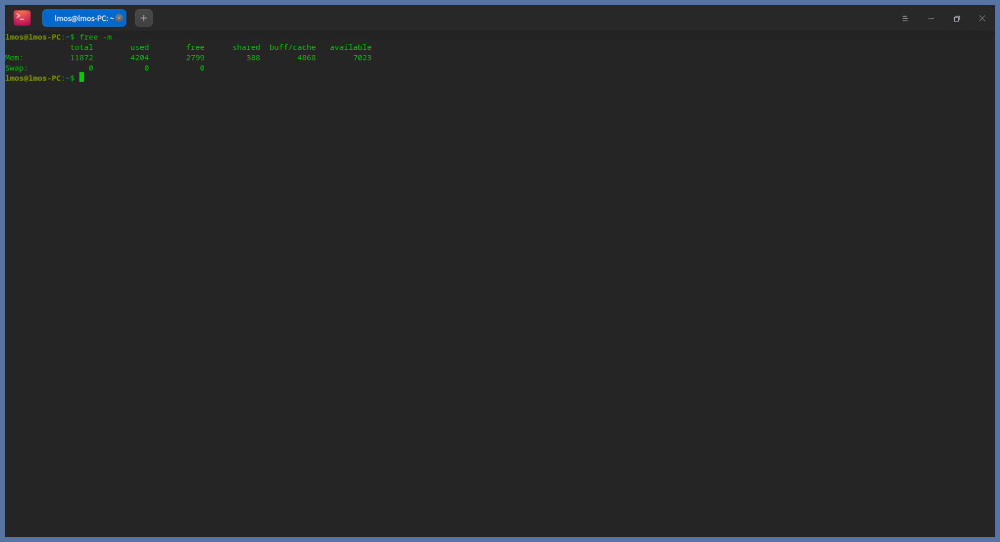
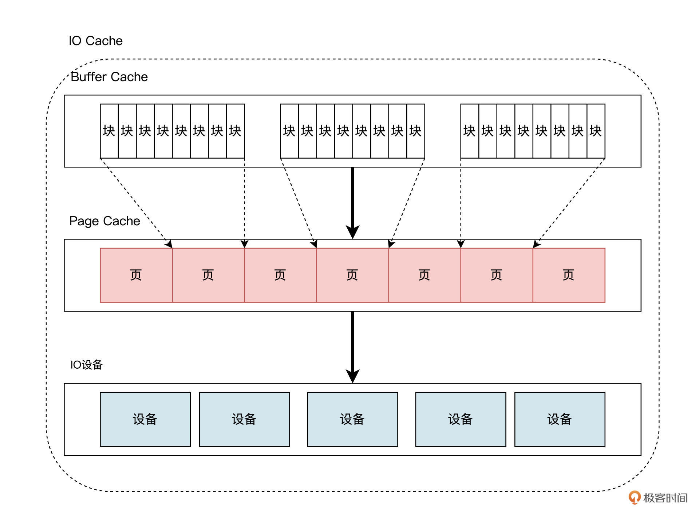
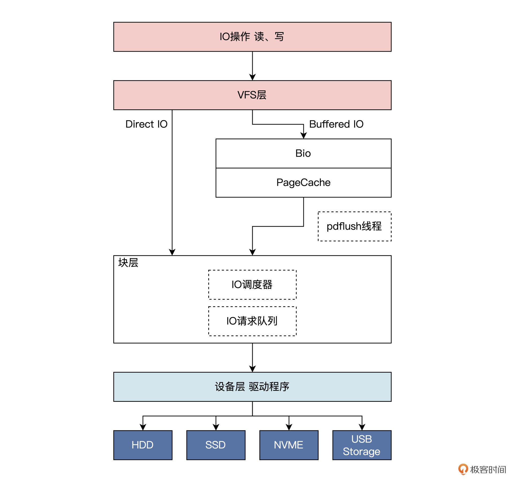
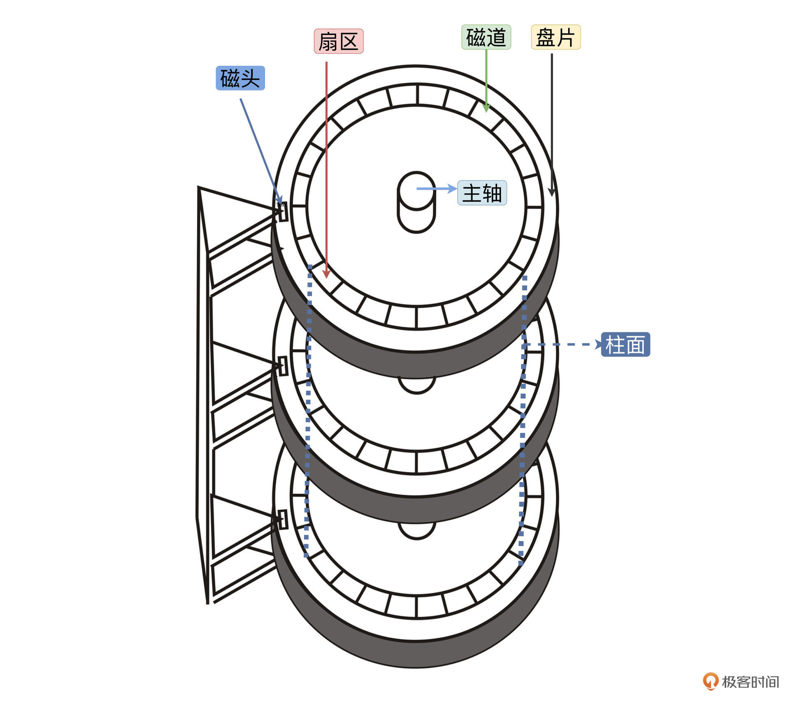
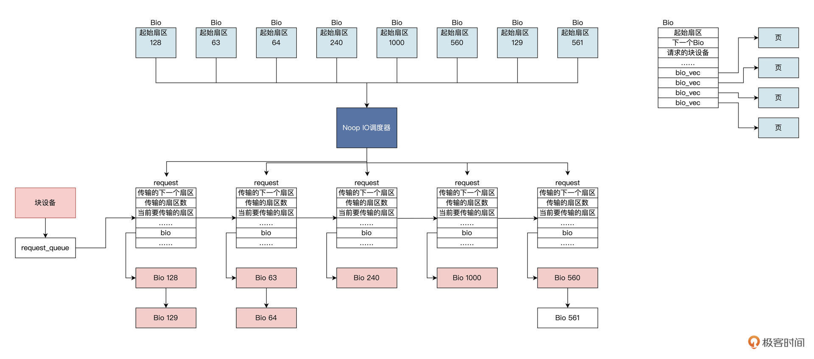
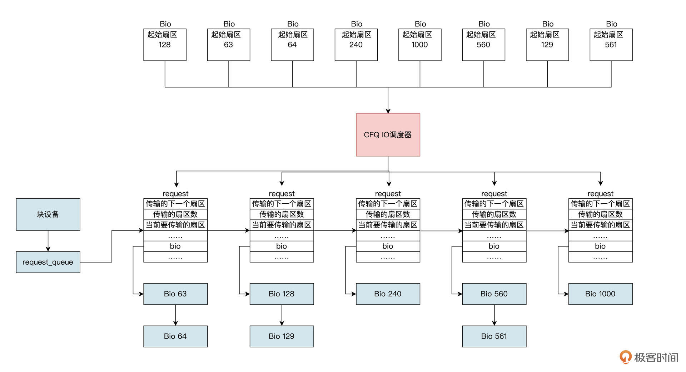
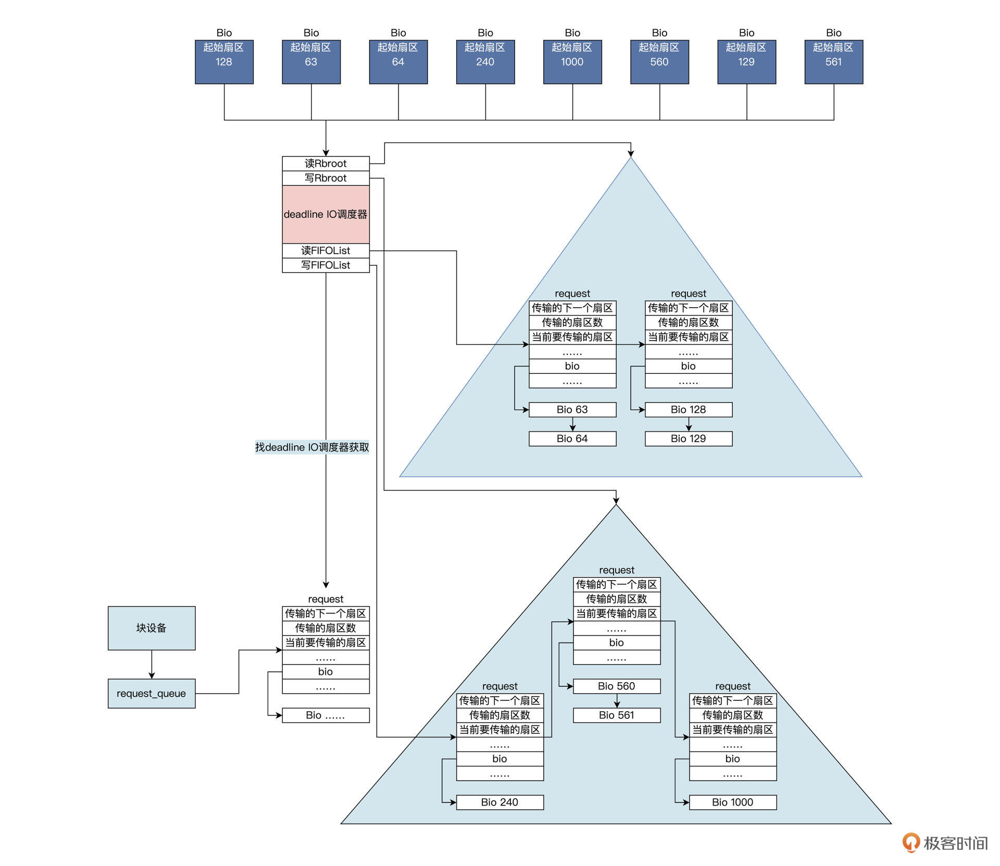

- 00 开篇词 练好基本功，优秀工程师成长第一步.md
- 01 CISC & RISC：从何而来，何至于此.md
- 02 RISC特性与发展：RISC-V凭什么成为“半导体行业的Linux”？.md
- 03 硬件语言筑基（一）：从硬件语言开启手写CPU之旅.md
- 04 硬件语言筑基（二）_ 代码是怎么生成具体电路的？.md
- 05 指令架构：RISC-V在CPU设计上到底有哪些优势？.md
- 06 手写CPU（一）：迷你CPU架构设计与取指令实现.md
- 07 手写CPU（二）：如何实现指令译码模块？.md
- 08 手写CPU（三）：如何实现指令执行模块？.md
- 09 手写CPU（四）：如何实现CPU流水线的访存阶段？.md
- 10 手写CPU（五）：CPU流水线的写回模块如何实现？.md
- 11 手写CPU（六）：如何让我们的CPU跑起来？.md
- 12 QEMU：支持RISC-V的QEMU如何构建？.md
- 13 小试牛刀：跑通RISC-V平台的Hello World程序.md
- 14 走进C语言：高级语言怎样抽象执行逻辑？.md
- 15 C与汇编：揭秘C语言编译器的“搬砖”日常.md
- 16 RISC-V指令精讲（一）：算术指令实现与调试.md
- 17 RISC-V指令精讲（二）：算术指令实现与调试.md
- 18 RISC-V指令精讲（三）：跳转指令实现与调试.md
- 19 RISC-V指令精讲（四）：跳转指令实现与调试.md
- 20 RISC-V指令精讲（五）：原子指令实现与调试.md
- 21 RISC-V指令精讲（六）：加载指令实现与调试.md
- 22 RISC-V指令精讲（七）：访存指令实现与调试.md
- 23 内存地址空间：程序中地址的三种产生方式.md
- 24 虚实结合：虚拟内存和物理内存.md
- 25 堆&栈：堆与栈的区别和应用.md
- 26 延迟分配：提高内存利用率的三种机制.md
- 27 应用内存管理：Linux的应用与内存管理.md
- 28 进程调度：应用为什么能并行执行？.md
- 29 应用间通信（一）：详解Linux进程IPC.md
- 30 应用间通信（二）：详解Linux进程IPC.md
- 31 外设通信：IO Cache与IO调度.md
- 32 IO管理：Linux如何管理多个外设？.md
- 33 lotop与lostat命令：聊聊命令背后的故事与工作原理.md
- 34 文件仓库：初识文件与文件系统.md
- 35 Linux文件系统（一）：Linux如何存放文件？.md
- 36 Linux文件系统（二）：Linux如何存放文件？.md
- 37 浏览器原理（一）：浏览器为什么要用多进程模型？.md
- 38 浏览器原理（二）：浏览器进程通信与网络渲染详解.md
- 39 源码解读：V8 执行 JS 代码的全过程.md
- 40 内功心法（一）：内核和后端通用的设计思想有哪些？.md
- 41 内功心法（二）：内核和后端通用的设计思想有哪些？.md
- 42 性能调优：性能调优工具eBPF和调优方法.md
- 先睹为快：迷你CPU项目效果演示.md
- 加餐01 云计算基础：自己动手搭建一款IAAS虚拟化平台.md
- 加餐02 学习攻略（一）：大数据&云计算，究竟怎么学？.md
- 加餐03 学习攻略（二）：大数据&云计算，究竟怎么学？.md
- 加餐04 谈谈容器云与和CaaS平台.md
- 加餐05 分布式微服务与智能SaaS.md
- 国庆策划01 知识挑战赛：检验一下学习成果吧！.md
- 国庆策划02 来自课代表的学习锦囊.md
- 国庆策划03 揭秘代码优化操作和栈保护机制.md
- 温故知新 思考题参考答案（一）.md
- 用户故事 我是怎样学习Verilog的？.md
- 结束语 心若有所向往，何惧道阻且长.md
31 外设通信：IO Cache与IO调度
你好，我是LMOS。
从这节课开始，我们进入IO相关基础知识的学习，想要开发高性能的应用程序，这些基础知识必不可少。
前面的课程里，我们已经对进程和内存有了一定了解。进程在运行时刻和CPU是紧密相关的，抽象出进程就是为了提高CPU的利用率。因此，我们关注进程和内存，等同于关注CPU和RAM。
一个计算机系统，无论是PC，还是手机，除了有CPU和RAM，还有各种外设，如键鼠、硬盘、显卡、以太网卡、声卡等各种USB扩展设备。
这些设备独立在CPU和内存之外，统称为外设。但是，外设通信的速度、大小、数据类型和传输方式各不相同，所以为了实现系统的整体效率最大化，操作系统实现了IO Cache和IO调度。今天我们就来研究它们。
IO Cache
顾名思义，Cache即为缓存，IO是指令外设传输（IN/OUT）数据的操作。
缓存是怎么回事我们都知道，由此我们就可以这样理解IO Cache：把外设的IO操作的数据保存起来，当重新执行IO操作时，先从之前保存的地方开始查找，若找到需要的数据，即为命中，这时就不要去操作外设了；若没有命中就去操作外设。其中的数据，会根据IO操作频率进行组织，把操作最频繁的内容放在最容易找到的位置，达到性能最优化。
我们在终端中输入如下命令，感受一下 ：
free -m
该命令是用来显示Linux系统上内存的使用情况的，单位以MB计。
输入这条命令，我们会得到如下图所示的情况：

上图中的buff/cache，就是我们所说的IO Cache占用的内存。从这个角度，是不是看得更透彻了？所谓IO Cache，不过是操作系统基于某种算法管理的一块内存空间，用该内存空间缓存IO设备的数据，应用多次读写外设数据会更方便，而不需要反复发起IO操作。
其实早期的Cache是位于CPU和内存之间的高速缓存，由于硬件实现的Cache芯片的速度仅次于CPU，而内存速度远小于CPU，Cache只是为了缓存内存中的数据，加快CPU的性能，避免CPU等待内存。而Buffer是在内存中由软件实现的，用于缓存IO设备的数据，缓解由于IO设备过慢带来系统性能下降。
但是现在Buffer和Cache成了在计算机技术中被用滥的两个名词。在Linux的内存管理中，Buffer指Linux内存的Buffer Cache，而Cache是指Linux内存中的Page Cache，翻译成中文可以叫做缓冲区缓存和页面缓存，用来缓存IO设备的读、写数据。补充一句，这里的IO设备，主要指的是块设备文件和文件系统上的普通文件。
在当前的Linux内核中，BufferCache建立Page Cache之上，如下图所示：

在现代Linux的实现中，远比上图画得要复杂得多，不过我们只需要关注这个层次结构就行了。Buffer Cache中有多个小块组成，块大小通常为512字节，在Linux内核中用一个struct Bio结构来描述块，而一个物理内存页中存在多个块，多个struct Bio结构形成Buffer Cache，多个这种页就形成了Page Cache。
在操作系统理论中，这一套实现机制被抽象为IO Cache。但是，各种操作系统的实现的叫法不同，在此不必展开了，我们只需要明白它们能在内存中缓存设备数据就行了。
我们明白了Buffer Cache和Page Cache的概念，下面我们以Linux读写硬盘的过程为例，研究一下IO操作时IO Cache发挥的作用。
一般情况下，Linux内核中的IO操作，会从上至下经过三大逻辑层，具体如下：
-
文件系统层。因为Linux中万物皆为文件，IO操作首先会经过文件系统，Linux为了兼容不同的文件系统，对文件、目录等文件系统对象进行了抽象，形成了VFS层，也是IO操作经历的第一层。
-
块层。Linux内核把各种设备分成块设备，字符设备、网络设备和硬盘都属于块设备，块层主要负责管理块设备的 IO 队列，对 IO 请求进行合并、排序等操作。
-
设备层。具体设备驱动通过 DMA 与内存交互，完成数据和具体设备之间的交换，此例子中的设备为硬盘。
我们画一幅图，表示一下这个过程：

IO操作在到达Linux的VFS层后，会根据相应的IO操作标志确定是DirectIO还是BufferedIO，如果是前者则不经过Cache，直接由块层发送到设备层，完成IO操作；如果是后者，则IO操作到达Page Cache之后就返回了。
在某一时刻，Linux会启动pdflush线程，该线程会扫描PageCache中的脏页，进而找到对应的Bio结构，然后把Bio结构发送给块层的IO调度器，调度器会对bio进行合并、排序，以提高IO效率。
之后，调用设备层的相关函数将Bio转发到设备驱动程序处理，设备驱动程序函数对IO请求队列中每个Bio进行分别处理，根据Bio中的信息向磁盘控制器发送命令。处理完成后，调用Bio完成函数以通知上层完成了操作。这便是一个IO操作的过程。
IO调度
在前面，我们已经明白了IO Cache的概念，它本质是把IO操作的数据，保存在内存中，使得在读取外设数据时能直接从内存中读取，或者数据缓存到一定量时，由一个特定任务在以后的某个时间批量地写入外设，这不但会提高系统整体吞吐量，还能保护设备以延长寿命。
我们把IO操作缓存起来了，这样操作系统就对IO操作有了控制权，具体点说就是可以对IO操作进行调度。
我先不直接说明IO调度是干什么的，先结合例子带你一起分析看看。我们从软件层面来看一个场景：假如一个应用程序往硬盘中写入1GB大小的文件，但是这个应用程序很调皮，它每次只写入一个字节。如果没有 IO Cache和IO调度，可以想见，这需要发生多少次IO操作才能完成，如果硬件能说话，估计要骂人。
再来说说硬件自己结构的问题，这里以机械硬盘为主。千万不要感觉机械硬盘已经淘汰了，其实在很多服务器上仍然大量使用它。硬盘结构如下所示：

一个硬盘中有多个盘片，一个盘片上有多个同心圆组成的多条磁道，每条磁道上有多个扇区，一个扇区512字节，磁头来回移动经过多个同心圆形成的柱面定位到一个扇区。很显然，找到一个扇区花费的时间等于磁头移动时间加上盘片旋转的时间。这些运动都是机械运动，是非常缓慢的。
以上两个场景，提醒我们有两个问题需要考虑，一是怎么降低IO操作次数，二是如何优化硬盘寻址。这两个问题解决好了，都能大大提升系统性能。想解决第一个问题，我们可以对IO操作进行缓存和合并；而对于第二个问题，我们可以对IO操作进行排序，能让硬盘磁头按照一定的顺序定位扇区，解决这些问题的就是IO调度器。
有了IO调度器，还得有相应的调度算法，IO调度器提供了多种调度算法来适应不同的IO请求场景。有的场景需要的是提高IO吞吐量，比如数据库后台的储存引擎；有的场景则是要降低IO响应时间，比如游戏应用程序。
我们先看看第一种调度算法，该算法名为Noop。Noop是最简单的IO调度算法，其实可以说它是没有“调度”的IO调度，因为Noop会把所有的IO请求，几乎按照先来后到的顺序放入先进先出队列之中。
之所以说“几乎”，是因为Noop在先进先出队列的基础上，还做了相邻IO操作的合并，而不是完完全全按照先进先出的规则满足IO操作。我来给你画一幅图，展示一下这个算法实施的操作，如下所示：

一个个BIo结构进入Noop IO调度器，产生request结构，这个结构中包含Bio链表。Noop IO调度器把扇区相邻的Bio合并在一起形成request结构，然后将requset结构挂载到块设备的requset_queue中，块设备通常是你的硬盘。
然后，我们来看看第二种调度算法，该算法名为CFQ，全称为Completely Fair Queuing。由于传统的机械硬盘上，硬盘寻址花去了绝大多数的IO操作的时间，所以要优化硬盘寻址所花的时间。
CFQ调度器的出发点就是对IO操作扇区地址进行排序，比如硬盘旋转到1号扇区，很快就旋转到2号扇区，如果你先访问2号扇区再次访问1号扇区，则要等到硬盘旋转一周后，才能到达1号扇区。CFQ调度器对其进行排序后，就能通过尽量少的硬盘旋转次数，来满足尽可能多的IO操作。CFQ调度器算法执行逻辑如下图所示：

我们看到在CFQ调度器下，将多个BIO结构生成requset结构时，会按照扇区地址升序挂载到块设备的requset_queue中，这会使机械硬盘的吞吐量大大提高。
相比Noop调度器，不知道你有没有发现一个问题：先来的IO操作并不一定能被满足，还可能会出现饿死的情况。比如，先来一个IO操作扇区地址是1000，然后不停地进入扇区地址小于1000的IO操作，就会出现饿死现象。
我们来看一看最后一种IO调度算法，该算法名为Deadline，Deadline调度器提供了两个红黑树以及两个先进先出队列，两个红黑树分别对读、写的IO操作按照其扇区地址排序，同时给每个IO操作添加超时时间，并插入到对应的（读、写）先进先出的队列尾部。这样一来，一个IO操作会同时挂在红黑树和先进先出队列中。
当Deadline调度器在发送一个IO操作时，会综合考虑IO操作是否超时、是否饥饿，由此决定到底发送哪个IO操作，发送IO操作之后会将该IO操作同时在红黑树和先进先出队列中删除。
我来画一幅图，展示一下这个算法实施的操作，如下所示：

上图中读写队列分开，同时用红黑树对其排序，而且还加入了超时机制。硬盘驱动会找Deadline IO调度器获取IO request，Deadline IO调度器根据这些数据结构和算法分配request，完美地解决了CFQ IO调度器的缺陷，由于读写分开且读优先于写，导致该算法非常适合数据库这种随机读写的场景。
我们发现，IO调度器算法多种多样，那么要怎么选择呢？
其实选择IO调度器算法，既要考虑硬件特性，也要考虑应用程序场景。在传统的机械硬盘上，CFQ、Deadline算法是不错的选择；对于专属的数据库服务器，Deadline IO调度器的IO吞吐量和IO响应时间综合性能都表现非常好。
然而在新兴的固态硬盘，比如SSD、NVMe上，最简单的NOOP IO调度器反而是最好的IO调度器。因为CFQ和Deadline调度算法，最主要是为缩短机械硬盘寻址时间而优化的；而固态硬盘没有所谓的机械运动寻址部件需要的时间，而且很快能准备好数据，所以IO响应时间非常短。
重点回顾
今天，我们一起学习了外设通信中的重要组件——缓存，它主要是在内存中开辟一大空间来暂时保存与外设通信的大量数据。这一点，我们通过在Linux上输入free命令已经看到，其实其它操作系统也具有类似机制，这里我们只是以Linux为例子。
为了搞明白IO Cache的概念，我们从Linux的缓存结构入手，发现Linux用物理内存页面为基础，建立了Page Cache。在这个Page Cache之上，又建立了Buffer Cache，BufferCache组织了传输到IO设置上的数据块。我们通过对IO流程的探讨，发现IO操作可以不经过IO Cache，而是直接到达设备。
之后，我们对软件场景和硬盘结构进行了讨论，发现有了IO Cache以后，还需要对IO请求进行调度，才能使IO效率最大化，针对不同的场景有不同IO调度器，我们重点讨论了三种IO调度算法，分别是Noop、CFQ、Deadline，其中综合性能最好的是Deadline。然而硬件技术的升级又产生了固态硬盘，导致这些IO调度器没有了用武之地，不调度就是最好的调度。
这节课的导图如下所示：

思考题
操作系统为什么要开发 IO Cache？
欢迎你在留言区和我交流讨论，如果觉得这节课对你有启发，别忘了分享给更多朋友！
© 2019 - 2023 Liangliang Lee. Powered by Vert.x and hexo-theme-book.